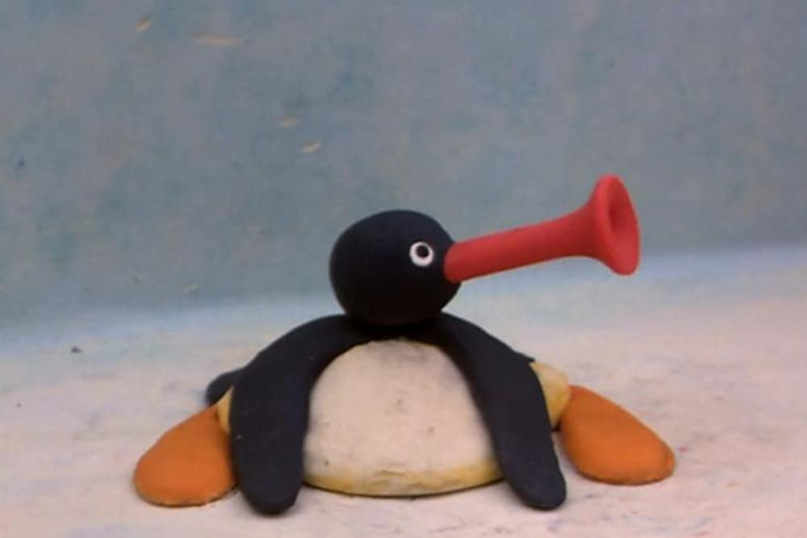

Mary Ann Shadd Cary was the first Black woman to publish a newspaper – called The Provincial Freeman – in North America. As an educator, she established a racially integrated school for Black children in Ontario, and as an activist, she advocated for the rights of Black people and women.
aksjddlakdadla

hihi
wow
